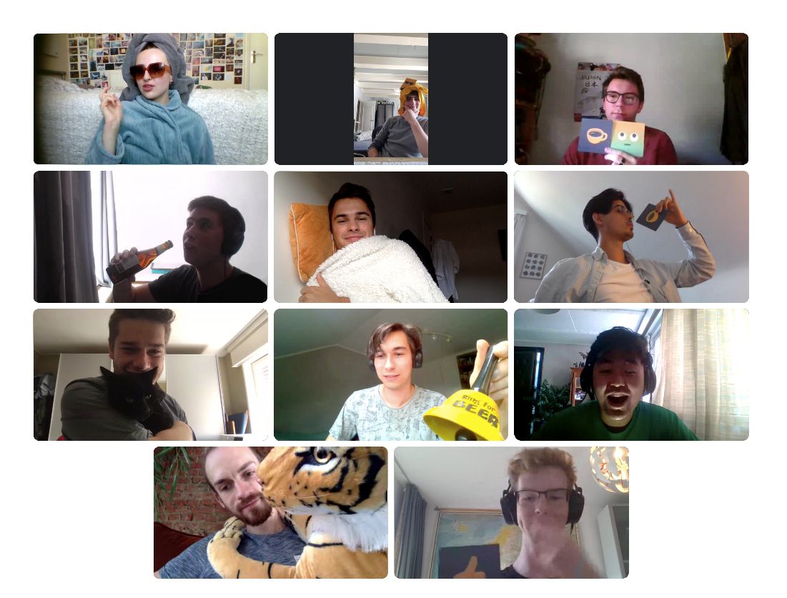

Welcome to the
Solid Elections Project
Welcome to the project page of the Solid Elections project. Here you can find everything you need to get started with our product. We have made a proof-of-concept that would replace the current bureaucratic process needed to declare campaign expences made by political lists and candidates. This has been commissioned by the ABB, Algmeen Binnenlands Bestuur. Their assignment was for us to simplify and digitalize the declaration process using technologies like Solid and Linked data.
To scale down this project within our scope, we decided to split the team and the project in three. The submission team will deal with the actual forms that polititians will fill in. The frontend team will be responsible for clearly displaying all data. Lastly the API team will act as a bridge between the two.
Submission team
Check out the website Check out the sourceAPI team
Check out the sourceFrontend team
Check out the website Check out the sourceDecentralize, Simplify and Kick Ass
The Solid ecosystem
During this project we have opted to use the Solid ecosystem. This is a newfangled way of storing data in a decentralized manner. In short, each user has their own 'Solid Pod', on which they store various data files. When a service, such as ours wants data from your pod, the user has to approve this transfer. We thereby improve safety and give back ownership of data to the user. Click here to find out more about solid!
True transparency
Lastly, we wanted this project to ensure full transparency for both citizens and polititions. First of all, this means the entire source code is available here. Secondly, we have built an intuitive interface that can acces, query, sort and graphically display all data, giving civilians, researchers and other interested parties important insights.
Simplify everything
Another one of our goals was to greatly simplify the declaration process for political lists and candidates. To accomplish this, we have made several improvements to the current forms. For example, we have isolated any personal data, so users will only have to fill those fields once. We have also implemented several checks ensuring proper data submission.
Our team
This project has been realized by an amazing team of students, brought together by the Open Summer of Code. We are experts in several fields like Communication, Design in both User experience and Visuals, Backend, System administration and Frontend design. In special, we want to thank ABB for providing us the oppertunity to develop this application. We also like to thank Rutger Bevers, Jodi De Loof and Open Summer of Code for providing the support we needed to complete this project.
Open Summer of Code
Open Knowledge Belgium organizes the yearly event Open Summer of Code during the month of July. During this month, several teams of students create open source solutions. Any information about the osoc event can be found here:
Visit the osoc website